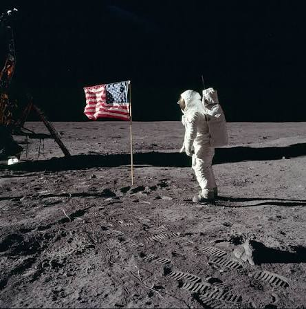
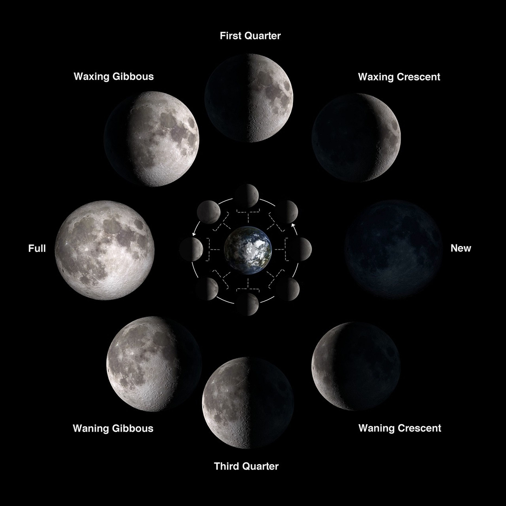

Our Moon shares a name with all moons simply because people didn't know other moons existed until Galileo Galilei discovered four moons orbiting Jupiter in 1610. In Latin, the Moon was called Luna, which is the main adjective for all things Moon-related: lunar. The many missions that have explored the Moon have found no evidence to suggest it has its own living things. However, the Moon could be the site of future colonization by humans. The discovery that the Moon harbors water ice, and that the highest concentrations occur within darkened craters at the poles, makes the Moon a little more hospitable for future human colonists.


With a radius of about 1,080 miles (1,740 kilometers), the Moon is less than a third of the width of Earth. If Earth were the size of a nickel, the Moon would be about as big as a coffee bean. The Moon is an average of 238,855 miles (384,400 kilometers) away. That means 30 Earth-sized planets could fit in between Earth and the Moon. The Moon is slowly moving away from Earth, getting about an inch farther away each year.
The Moon is rotating at the same rate that it revolves around Earth (called synchronous rotation), so the same hemisphere faces Earth all the time. Some people call the far side – the hemisphere we never see from Earth – the "dark side", but that's misleading. As the Moon orbits Earth, different parts are in sunlight or darkness at different times. The changing illumination is why, from our perspective, the Moon goes through phases. During a "full moon," the hemisphere of the Moon we can see from Earth is fully illuminated by the Sun. And a "new moon" occurs when the far side of the Moon has full sunlight, and the side facing us is having its night. The Moon makes a complete orbit around Earth in 27 Earth days and rotates or spins at that same rate, or in that same amount of time. Because Earth is moving as well – rotating on its axis as it orbits the Sun – from our perspective, the Moon appears to orbit us every 29 days.
When the solar system settled into its current layout about 4.5 billion years ago, Earth formed when gravity pulled swirling gas and dust in to become the third planet from the Sun. Like its fellow terrestrial planets, Earth has a central core, a rocky mantle, and a solid crust.
The Moon likely formed after a Mars-sized body collided with Earth several billion years ago. The resulting debris from both Earth and the impactor accumulated to form our natural satellite 239,000 miles (384,000 kilometers) away. The newly formed Moon was in a molten state, but within about 100 million years, most of the global "magma ocean" had crystallized, with less-dense rocks floating upward and eventually forming the lunar crust.
With too sparse an atmosphere to impede impacts, a steady rain of asteroids, meteoroids, and comets strikes the surface of the Moon, leaving numerous craters behind. Tycho Crater is more than 52 miles (85 kilometers) wide. Over billions of years, these impacts have ground up the surface of the Moon into fragments ranging from huge boulders to powder. Nearly the entire Moon is covered by a rubble pile of charcoal-gray, powdery dust, and rocky debris called the lunar regolith. Beneath is a region of fractured bedrock referred to as the megaregolith. The light areas of the Moon are known as the highlands. The dark features, called maria (Latin for seas), are impact basins that were filled with lava between 4.2 and 1.2 billion years ago. These light and dark areas represent rocks of different compositions and ages, which provide evidence for how the early crust may have crystallized from a lunar magma ocean. The craters themselves, which have been preserved for billions of years, provide an impact history for the Moon and other bodies in the inner solar system. The temperature on the Moon reaches about 260 degrees Fahrenheit (127 degrees Celsius) when in full Sun, but in darkness, the temperatures plummet to about -280 degrees Fahrenheit (-173 degrees Celsius).
The Moon has a very thin and weak atmosphere. It does not provide any protection from the Sun's radiation or impacts from meteoroids.
The early Moon may have developed an internal dynamo, the mechanism for generating global magnetic fields for terrestrial planets, but today, the Moon has a very weak magnetic field. The magnetic field here on Earth is many thousands of times stronger than the Moon's magnetic field.
https://science.nasa.gov/moon/facts/